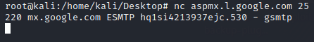
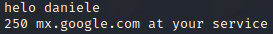
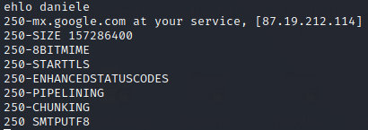

SMTP
SMTP commands
SMTP run on port 25
A client computer communicates with an
SMTP server (e-mail
server) by using
SMTP commands.
All SMTP servers that follows the SMTP protocol specification
must support these basic commands.
To allow more flexibility and additional features most SMTP servers also
support
ESMTP commands (also called SMTP service extensions)
dig -t mx google.com @1.1.1.1 #mail servers of google.com
nmap -p25 aspmx.l.google.com #check if the smatp port is open
nc aspmx.l.google.com 25 # establish a TCP connection to port 25 with netcat
 Now we can communicate
with the mail servers
◇ HELO (Hello)
The client sends this command to the SMTP server
to identify itself and initiate the SMTP conversation
helo <hostname>
ehlo <hostname> #if we want use ESMTP
 Bibliography:
•
https://www.samlogic.net/articles/smtp-commands-reference.htm